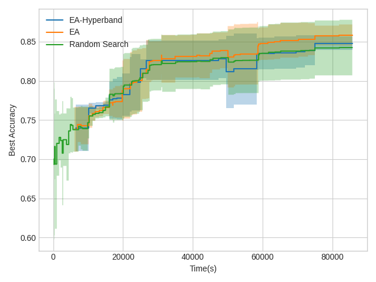

Automating hyperparameters search of a CNN
This is a the final project of the Automated Machine Learning that I took on the University of Freiburg, Germany.
The problem what to optimize automaticly the hyperparameters of a convolutional neural network. My approach for optimizing a network accuracy with constraints has been an Evolutionary Algorithm with Hyperband, which focuses on keeping a population that satisfy the constraints to then optimize the accuracy. If a configuration with the specified constraints is not satisfied the algorithm returns the one with the best found precision.

Constraints:
- Network size.
- Precision.